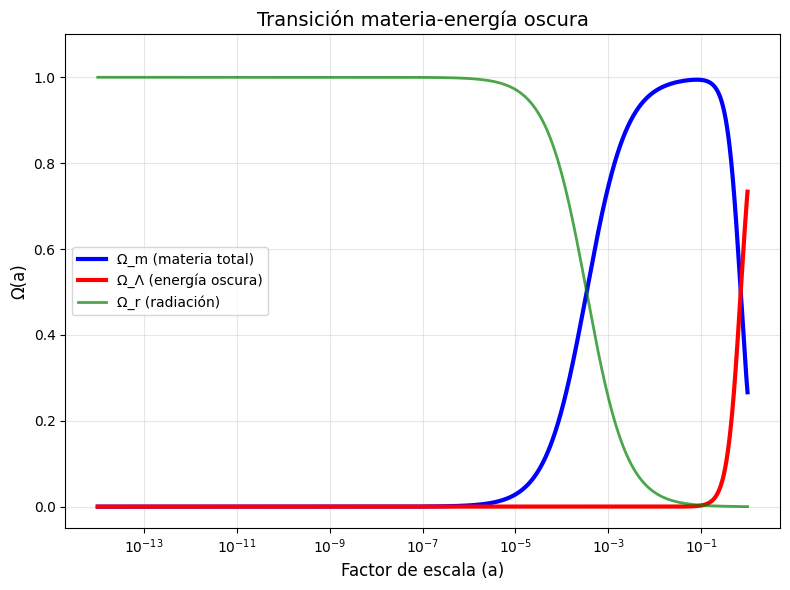
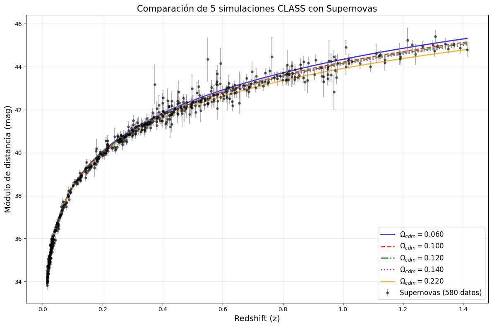
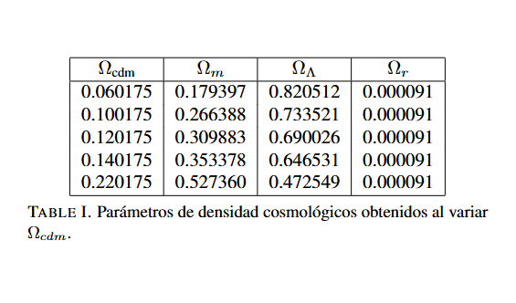

Cosmología Numérica y Observacional
Análisis de modelos cosmológicos con CLASS y Monte Python
Estudiante: Esteban Elías González Méndez
Asesor: Dr. Francisco Xavier Linares Cedeño
📖 Descripción del Proyecto
Este proyecto de investigación se centra en el estudio de modelos cosmológicos mediante herramientas computacionales de vanguardia. Se busca comprender la evolución del universo a través del análisis de sus componentes fundamentales: materia oscura, energía oscura y radiación, utilizando datos observacionales y simulaciones numéricas.
Actualmente, se están realizando las primeras corridas con el código CLASS (Cosmic Linear Anisotropy Solving System) para calcular observables cosmológicos como el factor de escala, el parámetro de Hubble y las densidades de los distintos componentes. Se ha comenzado explorando el modelo estándar ΛCDM, variando parámetros como Ωcdm para analizar su impacto en la dinámica cosmológica.
Como siguiente etapa, se implementará Monte Python para realizar inferencia bayesiana y restringir los parámetros del modelo utilizando datos observacionales de misiones como Planck, encuestas de galaxias (BAO) y supernovas tipo Ia. Esto permitirá no solo validar el modelo ΛCDM, sino también explorar modelos alternativos de materia oscura y energía oscura, evaluando su viabilidad cosmológica.
El proyecto tiene como objetivo final desarrollar las habilidades necesarias para la investigación en cosmología computacional, desde la generación de espectros de potencia hasta el análisis estadístico de cadenas MCMC, contribuyendo así a la comprensión de preguntas fundamentales sobre el origen y evolución del universo.
🔭 Metodología
1. Generación de observables con CLASS
Se utiliza el código CLASS para resolver las ecuaciones de Friedmann y calcular la evolución del factor de escala, el parámetro de Hubble y las densidades de los distintos componentes del universo (fotones, bariones, materia oscura, energía oscura, etc.). Se exploran diferentes valores de Ωcdm para analizar su efecto en la dinámica cosmológica.
2. Visualización y análisis
Los resultados se visualizan en gráficas que muestran la evolución de parámetros clave en función del redshift o del factor de escala, permitiendo identificar regímenes de dominancia (radiación, materia, energía oscura) y comparar con resultados reportados en la literatura.
3. Comparación con datos observacionales
Se contrastan las predicciones teóricas del módulo de distancia con datos reales de supernovas tipo Ia (catálogo Union2.1), evaluando la calidad del ajuste para distintos valores de los parámetros cosmológicos.
4. Inferencia bayesiana con Monte Python
Una vez familiarizado con los fundamentos de la estadística bayesiana, se implementará Monte Python para realizar cadenas MCMC y obtener las regiones de probabilidad para los parámetros del modelo ΛCDM, utilizando datos de Planck, BAO y supernovas.
📊 Resultados Preliminares
Se han realizado las primeras corridas con CLASS para el modelo ΛCDM, obteniendo las siguientes visualizaciones:
Transición materia-energía oscura

Ωₘ domina para a < 0.7, mientras que ΩΛ domina en la época actual (a = 1).
Módulo de distancia μ(z)

Comparación del modelo con datos de supernovas Union2.1. La concordancia valida los parámetros utilizados.
Variación de Ωcdm

Al variar Ωcdm se obtienen diferentes combinaciones de Ωₘ, ΩΛ y Ωr, mostrando cómo cambia la composición del universo.
Los resultados obtenidos hasta ahora muestran una buena concordancia con lo reportado en la literatura, particularmente en la comparación del módulo de distancia con los datos de supernovas Union2.1. Las curvas teóricas para diferentes valores de Ωcdm son prácticamente indistinguibles en el rango de bajos redshifts (z < 0.4), lo cual es esperado ya que en esta región la expansión está dominada por H₀ y la dependencia en los parámetros de densidad es mínima.
⚙️ Estado Actual
- ✓ Revisión bibliográfica completada
- ✓ Pruebas iniciales con CLASS para el modelo ΛCDM finalizadas
- ✓ Generación de gráficas de evolución cosmológica (factor de escala, H(a), densidades)
- ✓ Comparación con datos de supernovas Union2.1 realizada
- 🔄 Estudio de fundamentos de estadística bayesiana (en curso)
- ⏳ Implementación de Monte Python (próximamente)
- ⏳ Análisis de cadenas MCMC (próximamente)
- ⏳ Exploración de modelos alternativos de materia oscura (próximamente)
Actualmente me encuentro en la etapa de estudio de los fundamentos de estadística bayesiana, paso necesario antes de proceder con la implementación de Monte Python para la inferencia de parámetros cosmológicos.
🔗 Enlaces
Proyecto en desarrollo - Actualizado: Marzo 2026